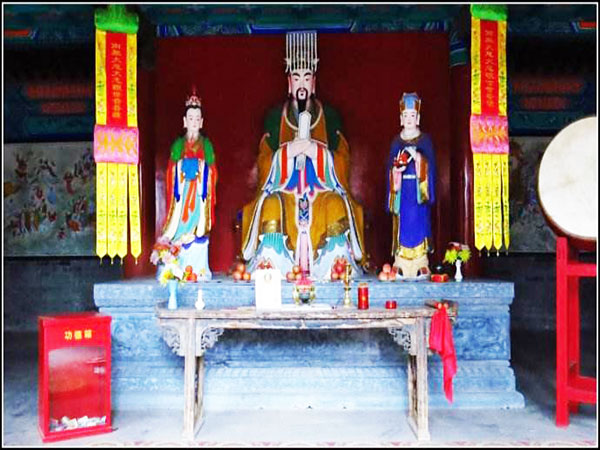
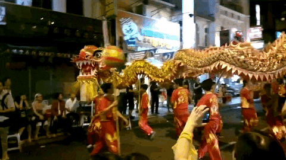
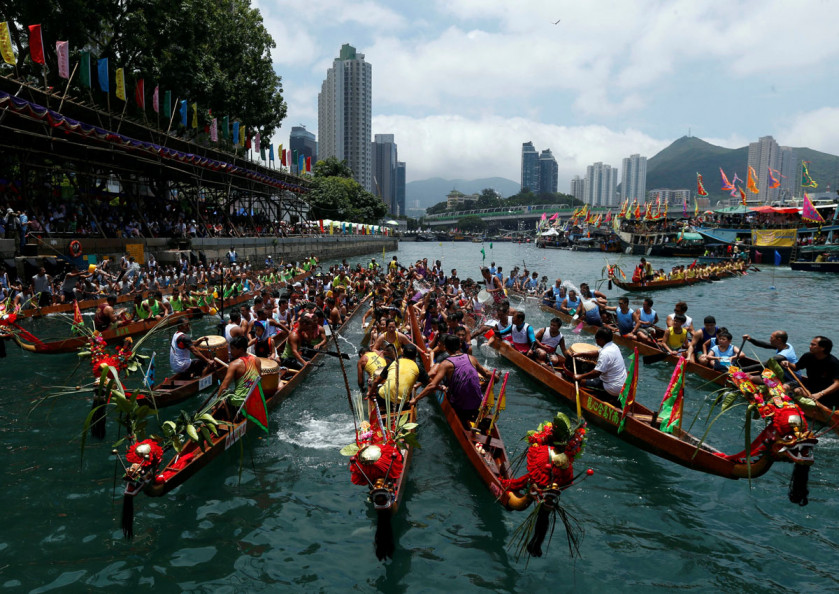

The Chinese dragon, also known as the loong, long or lung (simplified Chinese: 龙; traditional Chinese: 龍; pinyin: lóng), is a legendary creature Chinese mythology, Chinese folklore, and Chinese culture at large.
Chinese dragons have many animal-like forms such as turtles and fish, but are most commonly depicted as snake-like with four legs.
Academicians have identified four reliable theories on the origin of the Chinese dragon: snakes, Chinese alligators, thunder worship and nature worship.
They traditionally symbolize potent and auspicious powers, particularly control over water.
Chinese tradition has always used the dragon totem as the national emblem, and the "Yellow Dragon flag" of the Qing dynasty has influenced the impression that China is a dragon in many European countries. The white dragon of the flag of modern Bhutan is a classic Chinese-style dragon.
Historically, the Chinese dragon was associated with the Emperor of China and used as a symbol to represent imperial power. The founder of the Han dynasty Liu Bang claimed that he was conceived after his mother dreamt of a dragon.During the Tang dynasty, Emperors wore robes with dragon motif as an imperial symbol, and high officials might also be presented with dragon robes. In the Yuan dynasty, the two-horned five-clawed dragon was designated for use by the Son of Heaven or Emperor only, while the four-clawed dragon was used by the princes and nobles.Similarly during the Ming and Qing dynasty, the five-clawed dragon strictly reserved for use by the Emperor only. The dragon in the Qing dynasty appeared on the first Chinese national flag
Dragon King is deified as a god, called the Dragon God, and it is the highest ruler in seas, controlling all creatures in seas, and a god controlling water and weather
Noble as a god, the Dragon King is invited into temples, and worshipped by believers. His majestic and unique power makes him the controller of weather and water, and he may let it rains a lot, and he may order no rainfalls, which would in a great sense, have an impact on farming. Dragon Kings live in waters: the four Dragon Kings live in the four seas, and other dragon kings may live in lakes, rivers or other waters. When the dragon king is anger or loses his temper, the waters would be roaring, and have immense rolling waves, which is terrible for sailing and fishery. That makes dragon kings win respects from people and be an important god to people’s living. In temples, you can see dragon elements and sculptures of Dragon King here and there, while some temples enshrine more than one dragon king. In special days and festivals, like the Dragon Heads-raising Day and in the event of a drought, people would go to a Dragon King Temple, light incense sticks and pray for rains and good weather for agricultural production. When peasants suffer severe droughts, the Emperor of imperial authority may make worship rituals to Dragon King and devoutly pray for rains. In the Qing dynasty, the rituals are usually made in the Temple of Heaven.
Dragon is one of the 12 Chinese zodiac animals, with its own astrological personality and symbolism. Apart from that, in Chinese culture, dragons symbolize imperial power, good fortune, power over weather and water, and a pioneering spirit.
There are blue, green, red, black, white, yellow, and golden dragons in Chinese culture. Different colors of dragon represent different things.
Red is China's luckiest color. It is often used to decorate the house/building used for a wedding or festival. The red dragon therefore has lucky symbolism. People paint red dragons to decorate their houses or walkways to celebrate various festivals. It is a tradition to use red dragons for dragon dances.
The white dragon symbolizes purity just like in the West. However, people sometimes also associate it with death and mourning and see it as a bad omen.
In Chinese culture, blue and green are colors representing nature, health, healing, peace, and growth. A blue/green dragon symbolizes the approaching of spring, new life, and plant growth.
The yellow dragon symbolizes good fortune and power. Some also believe this dragon can control time and seasons. Since it’s the most revered dragon, ancient people often used it as a symbol of empire and the emperor. People also generally associate this dragon with attributes like warmth, wisdom, and wealth
Golden Chinese dragons are associated with powerful deities or harvest. Golden dragons always symbolize wealth, prosperity, strength, harvest, and power
The Chinese tradition includes a variety of different dragon types. Each is surrounded with a wealth of rich symbolism.
The dragon dance is an important cultural performance used to celebrate festivals in China. It is also a symbol of Chinese culture. Chinese dragons symbolize wisdom, power, good fortune, and wealth, so people perform dragon dances as a custom to welcome in good fortune and wealth.
Chinese people believed a dragon-like boat would scare away evil spirits. People celebrate the Dragon Boat Festival to commemorate the death of Qu Yuan, a Chinese poet who was known for his patriotism and contributions to Chinese classical poetry. According to the Chinese legend, Qu Yuan drowned in the Miluo River to show his protest and despair at the corruption of the local government. To save Qu Yuan from the river, local people took their dragon-like boats to search for him, but in vain. The shipmen beat drums, splashed the river water with paddles, and threw dumplings into the river to keep the fish and evil spirits away from his body.
